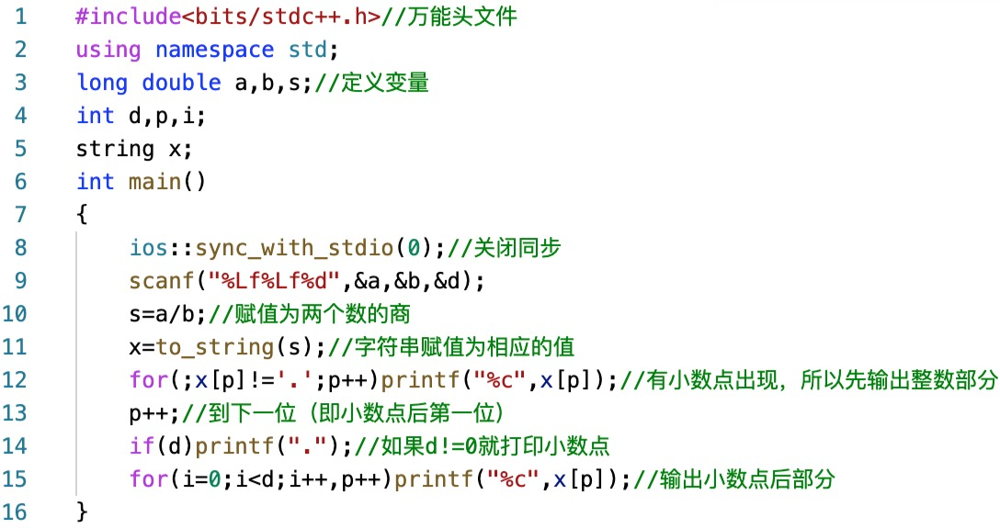

题目描述
蒟蒻们正在学习除法——这对于他们来说仍然有点困难。他们被指定求两个数的商，并保留给定的小数位数。输入
第一行输入两个数a,b。
第二行输入要保留的位数c。输出
输出a,b的商（保留c位小数，采用去尾法）。
注：假如a=5,b=2，则a与b的商为2.5，而不是2。样例输入
【输入样例1】
1 2
1
【输入样例2】
-6 5
3
【输入样例3】
-7 9
5样例输出
【输出样例1】
0.5
【输出样例2】
-1.200
【输出样例3】
-0.77777提示
对于1个数据点，c=0。
对于1个数据点，a，b为整数。
对于3个数据点，a与b的商的实际值所含有的小数位数小于c。
对于6个数据点，无特殊限制。
对于所有的数据，0<=c<=6。
输入不提，输入之后定义一个long double变量来保存两个数相除的结果（不是整除）。接下来介绍一个函数的用法：
函数类型
string to_string (int val);
string to_string (long val);
string to_string (long long val);
string to_string (unsigned val);
string to_string (unsigned long val);
string to_string (unsigned long long val);
string to_string (float val);
string to_string (double val);
string to_string (long double val);
以上来自CPP Reference网站。用法
该函数可放入上述参数值，返回的是对应的字符串的值。例如，to_string(4781)返回的值为"4781"。